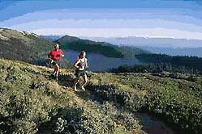

|


WHAT'S HASHING?
Hashing is non-competitive cross country running
with an extra added ingredient - fun! One or two people, known
as hares, lay a trail across the countryside in sawdust, flour,
chalk etc. for a group of runners, who are called hounds, to
follow. The trail will include loops, check points - where the
continuation of the trail has to be searched for, and false trails,
which are designed to slow the pace and keep the runners together
as a pack.
Hashing is definitely
not a race, the aim is to go out for an enjoyable run in the
countryside along with other people and to have fun trying to
find and follow the trail. The faster runners can have a good
hard run if they want it, but everyone else should be able to
keep up with them by shortcutting (which is positively encouraged!),
and regrouping at check points. It is a tradition of hashing
that after the run we all go back to a local pub together. Hashing
is a great way to get fitter (although being able to jog is all
the fitness you need), have fun, make new friends and to get
to know the countryside really well. However, hashers speak a
language all of their own, which often seems like (and is) gibberish.
If you are stupid enough to want to know what on earth they're
on about please click the following link: Yes, I want to learn hashspeak
and I'm quite sane really.
Hash
History
The sport of hashing started in Kuala Lumpur in
Malaya in 1938. A group of young British ex-patriots decided
to try to get fit and have some fun into the bargain. They each
took it in turns to lay a paper trail around the countryside
for the others to follow. They decided it would be much more
fun if it was non-competitive and to run as a group, with the
challenge being to find the trail.
After
their runs the group would return to the Sengalor Club in Kuala
Lumpur for a meal and drink. It was A S Gispert, known as G,
who thought up the name of Hash House Harriers. It has been said
that it was this memorable name which more than anything helped
turn the paper chase into the new sport of hashing. A hash house
was slang for a cheap eating house (this was meant tongue-in-cheek,
the Sengalor Club was not what many people would think of as
a hash house!) and a harrier was the name given to a cross country
runner in England. Other prominent members of the group were
'Horse' Thomson who was so called because he was said to look
like one and Torch Bennett who had red hair. So began the tradition
of awarding hash names. Kuala Lumpur being the original hashing
club is known throughout the world as the Mother Hash.
With the advent of the Second World War the hash
members were spread far and wide on military duties, but runs
recommenced in Kuala Lumpur after hostilities had ended. It was
largely through Horse Thomson badgering his old chums to come
out running that hashing survived. During the Malaya emergency
of 1948-1960 many British military personnel ran with the Kuala
Lumpur Hash and it was they who would later start new hash chapters.
However, it was not until 1962 that the second hash club, the
Singapore Hash House Harriers, was formed by Ian Cumming.
Since those early days hashing has
spread throughout the world. In 1997 there were 1470 hash chapters
in existence in 187 countries. The numbers are rising all the
time. In England the first recorded hash was the Plymouth Commando
Forces Hash House Harriers which was formed in 1971/2 by Colonel
Ray Thornton. The hash was shortlived owing to military postings
depleting the numbers. However, Ray went on to found Bicester
H3 in April 1974 (which is the oldest surviving hash in the UK),
Donnington H3 in 1976 and Looe & Liskeard H3 in 1982!
Hashing came to Devon in March 1981
with the formation of Tamar Valley H3 and Drake H3 was founded
on 23 January 1984. It is believed that Devon now has the highest
concentration of hashes anywhere in the world, so if you want
a hashing holiday this is the place to come!
It could be said that the sport of hashing has come
on in leaps and bounds and it has now become truly international.
Liitle coud those few ex-pats back in 1938 guess what a monster
they were creating, but it is them we have to thank for creating
a truly magnificent pastime - and providing a such a wonderful
excuse to drink beer (if you ever needed an excuse, that is!).
So here's a toast to the original KL Hash, I'll drink to that!
|